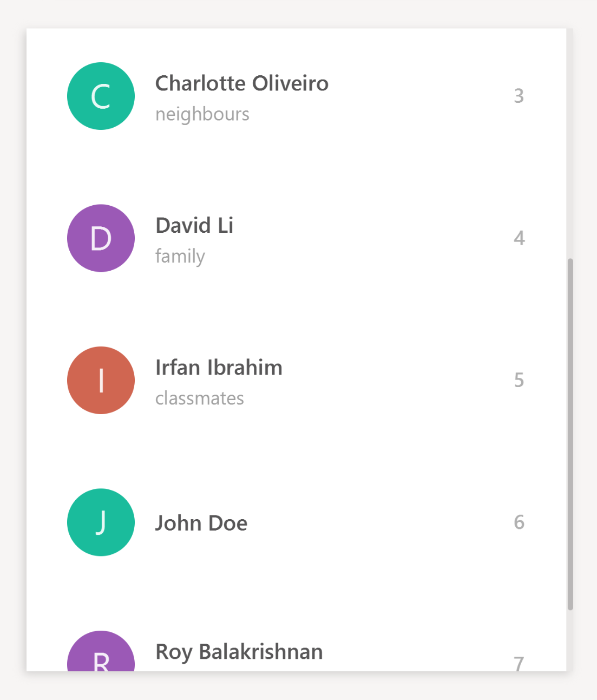

Project: Rolodex
Rolodex is a desktop Address Book application for computing professionals who prefer working without a mouse to manage their contacts more efficiently. Rolodex is an extension of AddressBook - Level 4, which is a desktop address book application used for teaching Software Engineering principles. The user interacts with it using a CLI, and it has a GUI created with JavaFX. It is written in Java, and has about 6 kLoC. Code contributed: [Functional code] [Test code] {give links to collated code files}
Enhancement Added: Keyboard Shortcuts
The table below shows the keyboard shortcuts that are added, with the exception of shortcuts with the behavior Exit the application
and View help window which came with the original state of the application.
Keyboard Shortcuts
Command Shortcuts
| Shortcut | Purpose |
|---|---|
Ctrl+L |
List all contacts |
Ctrl+H |
View history |
Ctrl+Z |
Undo last command |
Ctrl+Y |
Redo last command |
Ctrl+Shift+D |
Clear contact list |
F1 |
View help window |
Navigation/Selection Shortcuts
| Shortcut | Purpose |
|---|---|
Enter |
Select the command box |
Esc |
Deselect the command box |
When the command box is not in selection: |
|
↑ and ↓ |
Scroll the contact list |
Ctrl+D |
Delete the selected contact (Coming in V2.0) |
Alt+F4 |
Exit the application |
End of Extract
Justification
The main objective of Rolodex is to facilitate an efficient way of managing contacts for users with a preference for typing. Having keyboard shortcuts allows the user to navigate around the application with ease and speed. This implementation should enable the user to access all parts of the application without using the mouse.
Keyboard Shortcuts Mechanism
The keyboard shortcuts mechanism is implemented in the KeyListener class under the UI component of the application.
It listens for key presses done by the user and executes actions mapped to these key presses, or key events.
The mapping of actions to key events are found in the KeyListenerUtil class.
The following class diagram shows the relationship between classes concerning the keyboard shortcuts mechanism.

The KeyListener requires access to the CommandBox, PersonListPanel and Logic components for key event executions,
such as changing the focus node and executing word commands.
When the user launches the application, the UiManager calls mainWindow.setKeyListeners()
which creates the KeyListener class to handle the key events.
In KeyListener, the main method for handling the key events has the following code:
public void handleKeyPress() {
mainNode.addEventFilter(KeyEvent.KEY_PRESSED, event -> {
// actions to execute key event
});
}The mainNode refers to the node containing the all UI components in the application,
and addEventFilter captures key events received by that node.
Another common method used for capturing key events is keyOnPressed.
In this case, addEventFilter is used instead as key events captured by the former will be consumed by the TextField used in the application.
addEventFilter captures the key events before they are consumed by the TextField.
|
When the user presses a key combination which matches one that is assigned to the KeyCombination attribute in the KeyListenerUtil class, the corresponding action will be executed.
An example of such an execution is given as shown:
private void executeKeyEvents(KeyEvent keyEvent) {
if (FOCUS_PERSON_LIST.match(keyEvent)) {
// action to focus on person list
}
// … more cases
}Where the key combination FOCUS_PERSON_LIST matches the keyEvent captured by the event filter.
Design Considerations
Aspect: The way commands words are executed
Alternative 1 (current choice): Pressing the shortcut automatically executes the command
Pros: Execution of command is faster and more convenient for the user.
Cons: User may want to check what the shortcut does before executing the command.
Alternative 2: Pressing the shortcut replaces the TextField with the command word
Pros: Allows the user to check the command before executing it.
Cons: An extra step for user to execute the command, i.e. pressing Enter.
Aspect: Scrolling of the contact list
Alternative 1 (current choice): Pressing the Esc key focuses on the person list panel, then scrolling is handled by selecting the next contact with either the up or down arrow key.
Pros: User can select contacts quickly.
Cons: Scrolling is done by selection of contacts one at a time.
Thus, it may be time consuming for the user to search for a contact by scrolling.
Alternative 2: Contact list scrolls without triggering selection of a contact in the list
Pros: Scrolling motion is faster and smoother.
Cons: An extra step is needed for users who want to select a contact,
i.e. scroll the list until the contact is visible, then select the desired contact with a select command/shortcut.
End of Extract
Adding a profile picture: picture or pic (Coming in V2.0)
Adds a profile picture to the specified person in Rolodex.
Format: picture INDEX FILE_DIRECTORY or pic INDEX FILE_DIRECTORY
Examples:
-
picture 1 C:\Users\John\Pictures\my_pic.png
Sets the profile picture of the 1st person tomy_pic.png. -
pic 6 C:\Users\Alice\Pictures\Contacts\john.png
Sets the profile picture of the 6th person tojohn.png.
The second example is illustrated in greater detail here:
-
Before the addition of profile pictures, the contact list is loaded with the default avatar image as shown below.
 -
pic 6 C:\Users\Alice\Pictures\Contacts\john.pngis entered in the command box with the validFILE_DIRECTORY. -
If the command is entered correctly, you should see the updated profile picture as specified in the
FILE_DIRECTORYof the command.
End of Extract